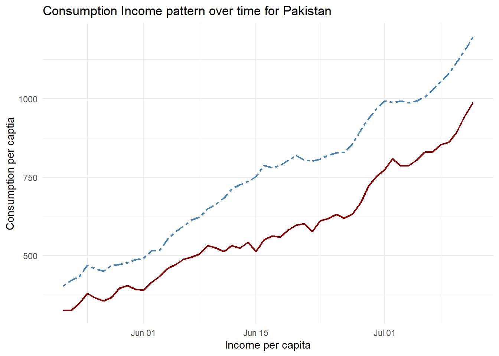
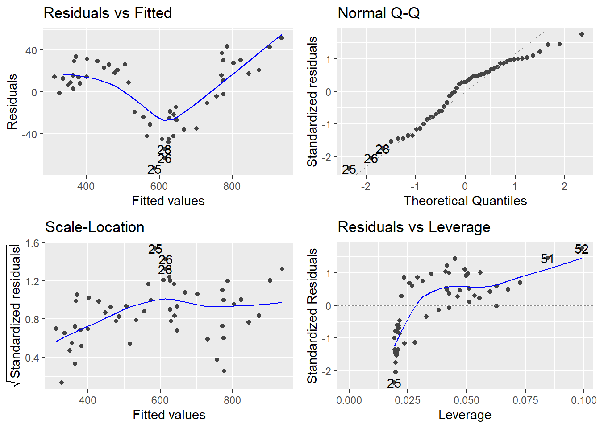
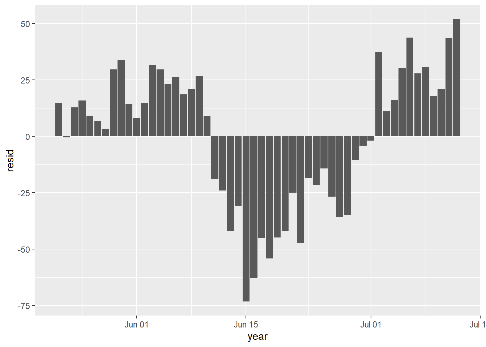
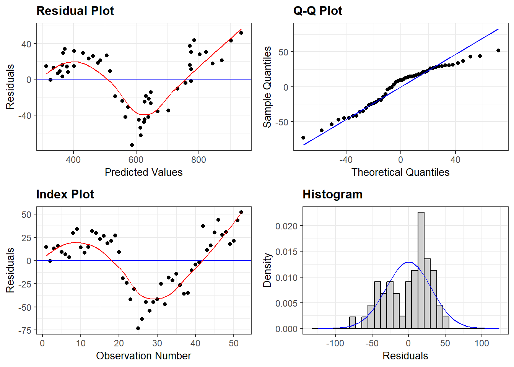
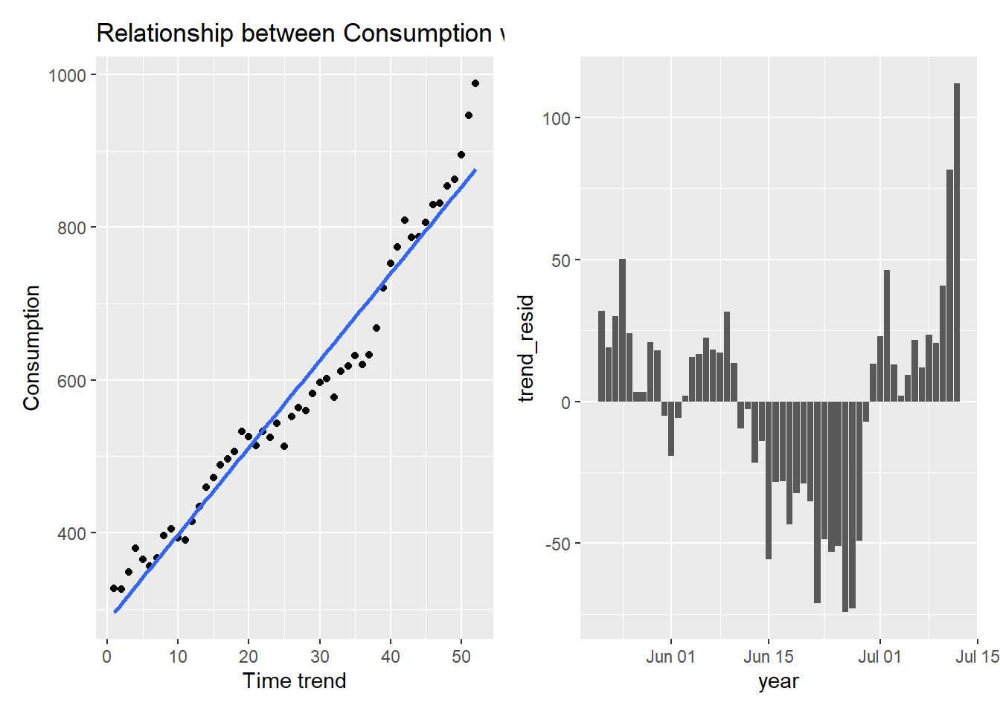
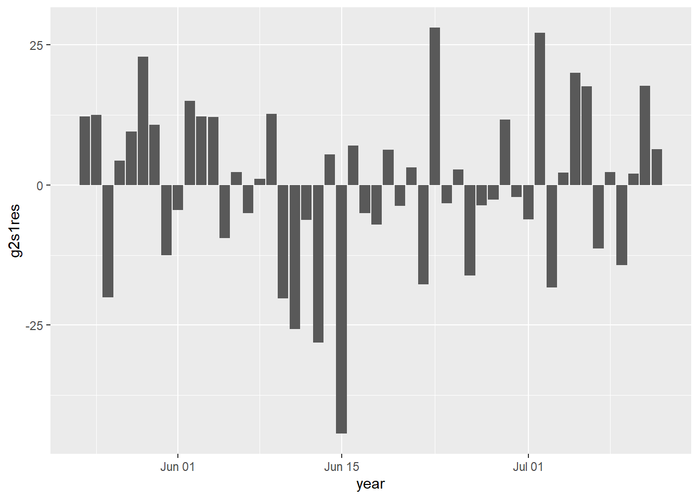
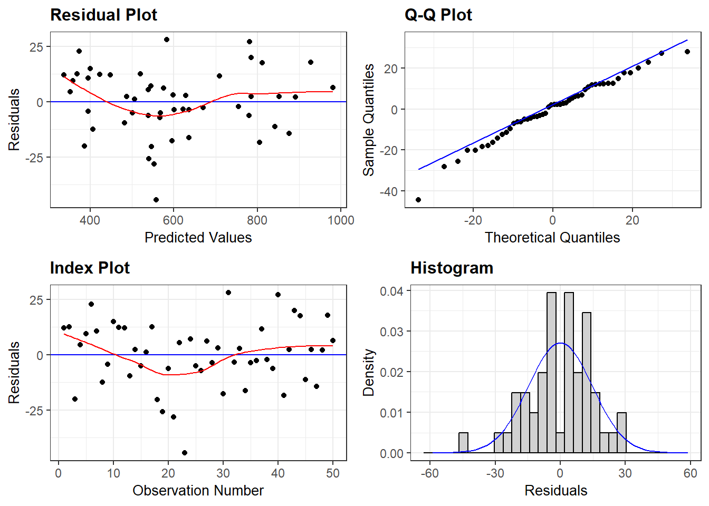

library(tidyverse)
library(dynlm)
library(haven)
library(fpp3)Keynes Consumption Function Modeling for Pakistan
Model Selection, Multicollinearity, G2S
Course: Economic Forecasting and Modeling
Section 1: Keynesian Consumption Function
Time series models are those where the data occurs in sequential time periods, so that there is a concept of progression of time. As opposed to this we have cross section models, where the data is from the same period of time but taken from different places. Within time series models, the simplest type is the static model. In static models, all the action takes place within one time period, and there is no effect of activity in one time period on the next. The simplest consumption function is the Keynesian consumption function, which is a static function. It says that current consumption depends only on current income, so that \(C_t = f(Y_t)\). Assuming that the function is linear, and that there can be a random error, leads to the simplest Keynesian consumption function: \(C_t =\alpha + \beta Y_t + \epsilon_t\)
Read data
cons_inc<-read_dta("Consumption_Income_Pakistan.dta")
library(tseries)
cons_inc$year<-as_date(cons_inc$year)
cons_inc<-cons_inc %>% mutate(Trend=1:52)Data on annual indome and consumption for Pakistan (with some approximations mainly from WDI) has been used for this lecture.
#cons_inc<-ts(con_inc,start = 1960, end=2019)
#cons_inc<-as_tibble(con_inc)
ggplot(cons_inc)+aes(x=year)+geom_line(aes(y = C), color = "darkred") +
geom_line(aes(y = Y), color="steelblue", linetype="twodash")+labs(x="Income per capita",y="Consumption per captia",title = "Consumption Income pattern over time for Pakistan")
The Keynesian consumption function is one of the most widely accepted and estimated regression models. The causal hypothesis is that Income (GDP) determines Consumption (Con): GDP \(Rightarrow\) Con. The simplest regression model which embodies this relationship is: \(C = \alpha + \beta Y\). Running this regression on the data leads to the following results:
# A tibble: 52 × 5
ID C Y C_hat residual
<int> <dbl> <dbl> <dbl> <dbl>
1 1 327. 404. 313. 14.7
2 2 326. 422. 327. -0.527
3 3 348. 433. 336. 12.8
4 4 380. 469. 364. 15.8
5 5 365. 459. 356. 9.18
6 6 356. 450. 349. 6.70
7 7 367. 469. 364. 3.28
8 8 396. 472. 366. 29.7
9 9 405. 478. 371. 33.7
10 10 393. 488. 379. 14.2
# … with 42 more rows
# A tibble: 2 × 5
term estimate std.error statistic p.value
<chr> <dbl> <dbl> <dbl> <dbl>
1 (Intercept) -4.42 15.4 -0.286 7.76e- 1
2 Y 0.785 0.0197 39.9 1.46e-39| Model 1 | |
|---|---|
| (Intercept) | −4.418 |
| (15.424) | |
| Y | 0.785 |
| (0.020) | |
| Num.Obs. | 52 |
| R2 | 0.970 |
| R2 Adj. | 0.969 |
| AIC | 509.1 |
| BIC | 515.0 |
| Log.Lik. | −251.556 |
| F | 1589.518 |
| RMSE | 30.53 |
The regression has \(R^2\) of 0.97, which is interpreted to mean that \(97\%\) of the variation in Pakistani Consumption can be explained by the Pakistani GDP. The \(t-stat=39\) shows that the coefficient income is highly significant. The \(p-value\) of \(0.000\) means we can reject the null hypothesis that the true coefficient is zero, corresponding to the idea that \(Y\) has no influence on \(C\). Validity of regression results depends on a large number of assumptions, which are discussed in econometrics textbooks.
Here are the results of regressing Per Capita consumption in Pakistan on Per Capita GDP from 1967 to 2018. A plot of the regression residuals is given below:
#acf(resid)
#pacf(resid)
#adf.test(resid)
cons_inc|>glimpse()Rows: 52
Columns: 9
$ year <date> 1975-05-22, 1975-05-23, 1975-05-24, 1975-05-25, 1975-05-26, 1…
$ C <dbl> 327.4169, 326.1967, 348.4950, 380.0568, 365.3227, 356.0221, 36…
$ Y <dbl> 403.7697, 421.6062, 433.0744, 469.4377, 459.0634, 450.3759, 46…
$ lnc <dbl> 5.791234, 5.787500, 5.853624, 5.940320, 5.900781, 5.874993, 5.…
$ lny <dbl> 6.000845, 6.044072, 6.070910, 6.151536, 6.129189, 6.110083, 6.…
$ c_y <dbl> 0.9650698, 0.9575499, 0.9642087, 0.9656647, 0.9627345, 0.96152…
$ cdividy <dbl> 0.8109000, 0.7737000, 0.8047000, 0.8096000, 0.7958000, 0.79050…
$ Trend <int> 1, 2, 3, 4, 5, 6, 7, 8, 9, 10, 11, 12, 13, 14, 15, 16, 17, 18,…
$ resid <dbl> 14.702276, -0.527145, 12.763683, 15.764683, 9.178845, 6.701742…ggplot(cons_inc)+aes(x=year, y=resid)+geom_col()
One of the central assumptions is that the regression residuals should be random, and should come from a common distribution. To check whether or not this holds, we graph the regression residuals, the differences between the actual value and the regression fit:

This plot shows serious problems, since these residuals display systematic behavior. They are all negative and small early. To see how these patterns differ from independent random variables, we provide a graph of independent random variables with mean 0 and standard error 4.579, matching the estimated regression model standard error. The Keynesian consumption function is one of the most widely accepted and estimated regression models. The causal hypothesis is that Income (GDP) determines Consumption (Con): GDP \(\Rightarrow\) Con. The simplest regression model which embodies this relationship is: Con = a + b GDP. Running this regression on the data leads to the following results:

Random residuals frequently switch signs. They do not display any patterns in sequencing. The patterned residuals in the consumption function prove that the regression is not valid. In such situations, econometricians typically assume that the problem is due to missing regressors or wrong functional form. By adding suitable additional regressors, and modifying the functional form, one can generally ensure that the residuals appear to satisfy the assumptions made about them.
2. What to do when errors are not independent?
Note that \(e_t=y_t-\hat{b}x_t\) and \(e_{t-1}=y_{t-1}-\hat{b}x_{t-1}\). A relationship between the two errors shows that what happens in period \(t-1\) has an effect on what happens in period \(t\). In other words, we have a dynamic model instead of a static model.
STATIC VERSUS DYNAMIC MODELS
A model of the type \(C_t = a + b Y_t + e_t\) is called a static model. Events in time period \(t\) are isolated from those of period \(t-1\) and \(t+1\). As opposed to this, if data from period \(t-1\) enters into the equation for period \(t\), then we have dynamic model.
Suppose that we conduct tests and learn that \(e_t\) is correlated with \(e_{t-1}\). Note that \(e_{t-1}=C_{t-1}-a-bY_{t-1}\). It follows that \(C_{t-1}\) and \(Y_{t-1}\) have an effect on current consumption.
The main message of correlated residuals is that variables from one period ago have an effect on current period.
Thus in order to fix up the problem of correlated residuals, we need to build a dynamic model. The simplest dynamic extension of the Keynesian model is the following: \[C_t=a+bY_t+cC_{t-1}+dY_{t-1}+e_t\]
We put in ALL the information we have about ALL the variables in the model at period \(t-1\). Similarly we could go back to period \(t-2\).
General-to-Simple vs. Simple-to-General Modelling:
In fixing problems detected by tests, there are two strategies which are commonly used. The older and more traditional strategy is called the bottom-up or simple-to-general strategy. In this strategy, we would start with the simplest model, which is a static Keynesian model. Then we note that the errors are correlated. Then we make the simplest dynamic extension. Next we test the errors. If the problem of autocorrelation has been eliminated then we stop here. If there is still autocorrelation, it follows that a higher order dynamic model is needed. So we go to a second order model. We keep increasing the order (and complexity) of the model until we get to a point where the errrors are not autocorrelated. This is one aspect of simple-to-general modelling.
The alternative to this which has recently been proposed, and shown to have superior properties, is general to simple modelling. In this method, we note that errors seem to be correlated upto the fourth order. So we start with a fourth order dynamic model. In general the goal is to start with the biggest model you might possibly need and simplify it down to a simpler model. This is called the top-down or general to simple strategy. We have illustrated this on the data set as well. The final model which emerges from our analysis is \(C_t = a + b Y_t + c C_{t-1} + e_t\). However, this model suffers from both structural change and heteroskedasticity. This suggests that we should try a log transformation to get rid of the heteroskedasticity. Perhaps this will eliminate or reduce the structural change problem as well.
the simple Keynesian consumption function \(C_t= a + bY_t + e_t\) failed several tests on Pakistani data – it has autocorrelated errors, heteroskedasticity (via GQ but not White), and also fails the CHOW test for structural stability.
How should we proceed? Experience with consumption functions shows that they very often have dynamic properties. This is indicated by the autocorrelation of the errors as well. Thus we try the simplest dynamic extension:
Larger Model
We start with General to Specific approach and include upto three lags of both consumption and income. There is no hard and fast rule but it is suggested that number of regressors should not exceed number of observations. We have in total 52 observations we can select 3 or 4 lages of each (had it been quarterly data we would have selected 4 lags of each). Some studies suggest to have regressor should not exceed one third of the total number of observations.
g2s<-lm(C~Y+lag(Y,1)+lag(C,1)+lag(Y,2)+lag(C,2)+lag(Y,3)+lag(C,3),data=cons_inc)
modelsummary(g2s,estimate = c("{estimate} ({std.error}){stars}"))| Model 1 | |
|---|---|
| (Intercept) | −8.881 (8.590) |
| (8.590) | |
| Y | 0.618 (0.169)*** |
| (0.169) | |
| lag(Y, 1) | −0.118 (0.296) |
| (0.296) | |
| lag(C, 1) | 0.798 (0.156)*** |
| (0.156) | |
| lag(Y, 2) | −0.544 (0.297)+ |
| (0.297) | |
| lag(C, 2) | 0.114 (0.189) |
| (0.189) | |
| lag(Y, 3) | 0.105 (0.214) |
| (0.214) | |
| lag(C, 3) | 0.025 (0.159) |
| (0.159) | |
| Num.Obs. | 49 |
| R2 | 0.993 |
| R2 Adj. | 0.992 |
| AIC | 417.0 |
| BIC | 434.0 |
| Log.Lik. | −199.494 |
| F | 817.725 |
| RMSE | 14.19 |
Results indicate that Y and first lag of C are highly significant and second lag of Y is significant at 10%. So by standard statistical procedure, one should drop all variables and re-run the regression with significant variables as follows:
g2s1<-lm(C~Y+lag(C,1)+lag(Y,2),data=cons_inc)
modelsummary(g2s1,estimate = c("{estimate} ({std.error}){stars}"))| Model 1 | |
|---|---|
| (Intercept) | −7.094 (8.024) |
| (8.024) | |
| Y | 0.527 (0.101)*** |
| (0.101) | |
| lag(C, 1) | 0.896 (0.071)*** |
| (0.071) | |
| lag(Y, 2) | −0.438 (0.097)*** |
| (0.097) | |
| Num.Obs. | 50 |
| R2 | 0.993 |
| R2 Adj. | 0.992 |
| AIC | 419.7 |
| BIC | 429.3 |
| Log.Lik. | −204.854 |
| F | 2082.114 |
| RMSE | 14.56 |
Oh great now we have all the variables are highly significant and if residuals satisfy all standard assumptions, it will be perfect fit. So lets have a look at the residuals behavior.
resid_panel(g2s1,plots = 'default',smoother = TRUE)
Well it seems all is perfect. But what about theoretical interpretation.
Multicolinearity and economic rationale
Now if we interpret and explain our model, it will be little odd to say that consumption is function of current income, last year consumption and 2 years lagged income. As first two coefficient makes sense and we shall also learn about these later on as well. But instead of first lag of income , what does explain second lag to be in the model either needs a very solid reason or explore your econometric model little more.
As in time series data there is very high correlation of variables with their own lagged values. So lets have a look at the correlation matrix and observe how highly they are correlated with each other.
library(corrplot)
cons_inc<-cons_inc|>mutate(lagY1=lag(Y,1),lagY2=lag(Y,2),lagY3=lag(Y,3),lagC1=lag(C,1),lagC2=lag(C,2),lagC3=lag(C,3))
M<-cons_inc|>select(C,Y,lagY1,lagY2,lagY3,lagC1,lagC2,lagC3)|>na.omit()
M1<-cor(M)
corrplot(M1,method = 'number')
This correlation plot indicated very correlation between variables and their lags which implies these variables have very high multicollinearity and indicating they are almost perfect substitutes. Economic rationale suggests that first lag of income should be more relevant in explaining current consumption than that of second lag of income. Correlation between lag(Y,1) and lag(Y,2) is 0.997, therefore, lets use first lag of Y in the model.
g2s2<-lm(C~Y+lag(C,1)+lag(Y,1),data=cons_inc)
modelsummary(g2s2,estimate = c("{estimate} ({std.error}){stars}"))| Model 1 | |
|---|---|
| (Intercept) | −7.375 (7.985) |
| (7.985) | |
| Y | 0.727 (0.156)*** |
| (0.156) | |
| lag(C, 1) | 0.903 (0.074)*** |
| (0.074) | |
| lag(Y, 1) | −0.639 (0.161)*** |
| (0.161) | |
| Num.Obs. | 51 |
| R2 | 0.992 |
| R2 Adj. | 0.992 |
| AIC | 430.8 |
| BIC | 440.4 |
| Log.Lik. | −210.392 |
| F | 2067.854 |
| RMSE | 14.98 |
Oh that makes sense.